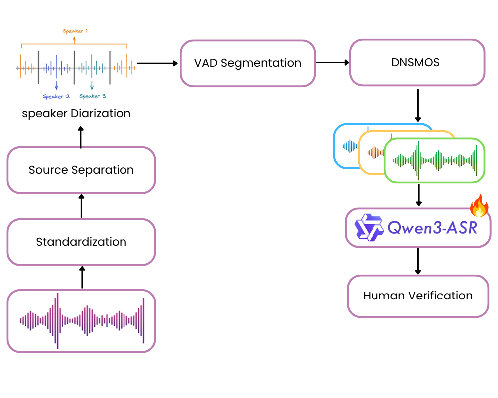

Demo nhận diện cảm xúc & tín hiệu phi ngôn ngữ từ giọng nói
Nonverbal vocalizations, such as laughter and fillers, play a critical role...

Audio → Feature Extraction → Model → Prediction
| Model | WER (%) |
|---|---|
| PhoWhisper (large) | -- |
| wav2vec2-large-vi-vlsp2020 | -- |
| Qwen3-ASR (ft) | -- |
| Whisper (ft) | -- |
The results indicate that incorporating nonverbal annotations does not degrade ASR performance.
| Model | WER | Precision | Recall | F1 |
|---|---|---|---|---|
| Whisper | -- | -- | -- | -- |
| Qwen3-ASR | -- | -- | -- | -- |